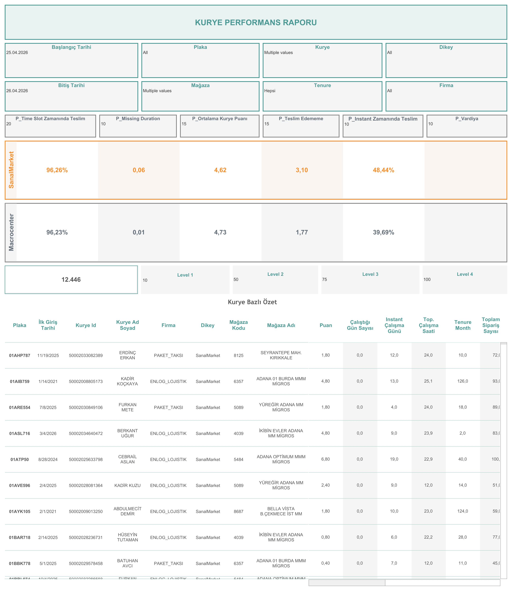

Canlı Rapora Erişin
Güncel Last Mile performans verilerini Tableau üzerinde interaktif olarak görüntüleyin.
Dashboard Hakkında
Ne Gösterir?
Kurye Performans Raporu, Last Mile operasyonuna ait kurye bazlı performans metriklerini mağaza ve dikey bazında karşılaştırmalı olarak sunar. Ağırlıklı KPI sistemi, anlık teslimat oranı ve puan dağılımı ile bireysel ve operasyonel sağlığı değerlendirmeye imkân tanır.
- Ağırlıklı KPI Sistemi: P_Time Slot Zamanında Teslim (%20), P_Missing Duration (%10), P_Ortalama Kurye Puanı (%15), P_Teslim Edememe (%15), P_Instant Zamanında Teslim (%10), P_Vardiya ağırlıkları ile hesaplanan performans skoru
- Dikey Bazlı Performans: SanalMarket ve Macrocenter bazında zamanında teslimat oranı, ortalama eksik süre, kurye puanı ve teslim edemememe oranı karşılaştırması (SanalMarket: %96,26 — Macrocenter: %96,23)
- Instant Teslimat: SanalMarket %48,44 — Macrocenter %39,69 instant zamanında teslim oranı
- Seviye Eşikleri: Toplam 12.446 kurye; Level 1: 10 puan, Level 2: 50 puan, Level 3: 75 puan, Level 4: 100 puan eşiğiyle sınıflandırma
- Kurye Bazlı Özet: Plaka, ilk giriş tarihi, kurye ID, ad soyad, firma, dikey, mağaza kodu/adı, puan, çalıştığı gün sayısı, instant çalışma günü, toplam çalışma saati, tenure month ve toplam sipariş sayısı
- Filtreler: Başlangıç/bitiş tarihi, plaka, kurye, dikey, mağaza, tenure ve firma bazlı filtreleme
Dashboard Önizleme

Last Mile Kurye Performans Raporu — Tableau